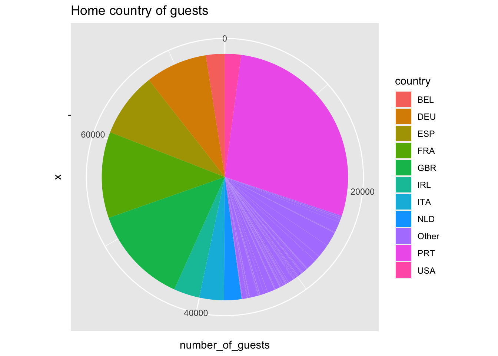

Now we load the data. I sorted the datasets by size and picked the largest one which is “hotel_bookings.csv”. I will use the read_csv() function as it’s the recommend way to load files.
Code
data =read_csv("_data/hotel_bookings.csv")
Rows: 119390 Columns: 32
── Column specification ────────────────────────────────────────────────────────
Delimiter: ","
chr (13): hotel, arrival_date_month, meal, country, market_segment, distrib...
dbl (18): is_canceled, lead_time, arrival_date_year, arrival_date_week_numb...
date (1): reservation_status_date
ℹ Use `spec()` to retrieve the full column specification for this data.
ℹ Specify the column types or set `show_col_types = FALSE` to quiet this message.
Code
# We inspect the columns in this dataset using the head commandhead(data)
The dataset contains booking information for hotels, and includes information such as the time of booking, length of stay, the number of guests, cancellations, etc. We look at the first few rows of the data to get a visual outline of the dataset and we observe that columns agent, company and country have a lot of NULL values. We can use the following to get a column-wise representation of all the garbage values.
Cleaning the data
Code
data %>%summarize_all(list(~sum(is.na(.))))
We observe that only children column has na values even our manual inspection told us a different story. Let’s dig in a bit more and identify why the code block above doesn’t give us the expected results.
We observe that the columns like agent and company have “NULL” values, but they don’t show up with the method above. The challenge here is that these values are still character data types and can’t be detected if we’re looking for na or nan values. We can simply use the stringr package and calculate the percentage of “NULL” strings each column has.
Code
# we use the stringr package for thislibrary(stringr)# get the null percentagesnull_percentages <-sapply(data, function(x) sum(str_detect(x, "NULL"))/length(x))# put it into a tibble and arrange itnull_percentages_tibble <-tibble(column =names(data), null_percentage = null_percentages)null_percentages_tibble %>%arrange(desc(null_percentage))
We can see that company, agent and country have “NULL” strings as values which are functionally equivalent to na / nan or garbage values. Addtionally, children has some na values. We can replace these strings with meaningful values.
Code
replace_garbage <-c(country ="Unknown", agent =0, company =0)# find indices that have `na`na_indices <-which(is.na(data$children))data$children[na_indices] <-0.0# Use a for loop to replace missing values in each columnfor (col innames(replace_garbage)) { data[data[,col] =="NULL", col] <- replace_garbage[col]}head(data)
Code
dim(data) # 119390x32
[1] 119390 32
We can use hints from manual inspection and dig in a little more.
Code
data %>%count(meal) %>%arrange(-n)
according to the dataset description, Undefined/SC = no meal. So we can convert all the “Undefined” values to SC.
We can also look the # of guests in each room and see if we get some insight. Let’s plot them into three bins: <1, 1-2, and >=3. We’ll use a polar coordinate pie chart for this as it’s easy to show the relative differences in loose self-constructed bins that way.
Code
library(dplyr)data %>%group_by(guests = adults + children + babies) %>%summarize(count =n()) %>%mutate(guests =ifelse(guests ==0, "0", ifelse(guests <=2, "1 to 2", ">=3"))) %>%ggplot(aes(x = guests, y = count, fill = guests)) +geom_bar(stat ="identity") +ggtitle("Total number of guests") +theme(plot.title =element_text(hjust =0.5)) +coord_polar("y", start =0) +scale_fill_manual(values =c("#F8766D", "#00BFC4", "#619CFF"))
We observe that there are non-zero entries in the pie with # of adults + children + babies = 0. Let’s get rid of those rows.
Code
data <- data %>%filter(adults !=0| children !=0| babies !=0)dim(data) # 119210x32
[1] 119210 32
EDA: Let’s explore the data a little more
Since we don’t know where these hotels are located, we can try to get hints from the guests that visit these hotels. Let’s plot them on a pie chart and check what countries are represented in this data.
Code
library(ggplot2)library(dplyr)# get number of guests by country who haven't cancelledcountry_data <- data %>%filter(is_canceled ==0) %>%group_by(country) %>%summarise(number_of_guests =n()) %>%ungroup()# calculate the percentage of guests by countrytotal_guests <-sum(country_data$number_of_guests)country_data$Guests_in_percent <-round(country_data$number_of_guests / total_guests *100, 2)# group countries with less representationcountry_data$country <-ifelse(country_data$Guests_in_percent <2, "Other", country_data$country)# polar pie plotggplot(country_data, aes(x ="", y = number_of_guests, fill = country)) +geom_bar(width =1, stat ="identity") +ggtitle("Home country of guests") +coord_polar(theta ="y")

We observe that Portugal and Great Britain are the countries that are over represented in this data. Which could mean that the hotels are close to those two countries and likely in Europe.
Potential research questions
We can see that the data also records some interesting columns like lead_time, market_segment, distribution_channel, is_repeated_guest, previous_cancellations, booking_changes which could be used as predictive signals to determine the potential value of a customer. For instance, if a customer is making too many changes, have a history of cancelling, and from a particular distribution channel that might lead us to think that they are likely to make a last minute cancellation. This could be used to make predictions about availability and dynamic pricing of rooms – akin to what the airline industry does. A lot of questions still remain unanswered from this preliminary EDA.
For instance, - if we can figure out how much guests pay for a room per night we can figure out how the price per night changes over the year? This would help us to know what the best time of the year is to get the best price.
We similarly check which months are the busiest and compare those two charts. This would tell us how closely the price of a room is tied to the availability of a room.
Finally we could use these insights among others to inform our statistical models for predicting the cancellations before they happen. We can use a part of the dataset to make predictions and calculate how accurate our models are.
Source Code
---title: "Homework 3"author: "Tanmay Agrawal"desription: "Exploratory Data Analysis"date: "01/24/2023"format: html: toc: true code-fold: true code-copy: true code-tools: true df-print: pagedcategories: - hw3 - hotel_bookings.csv---We first load the necessary libraries```{r}library(tidyverse)library(ggplot2)library(dplyr)knitr::opts_chunk$set(echo =TRUE)```Now we load the data. I sorted the datasets by size and picked the largest one which is "hotel_bookings.csv". I will use the `read_csv()` function as it's the recommend way to load files.```{r}data =read_csv("_data/hotel_bookings.csv")# We inspect the columns in this dataset using the head commandhead(data)```The dataset contains booking information for hotels, and includes information such as the time of booking, length of stay, the number of guests, cancellations, etc. We look at the first few rows of the data to get a visual outline of the dataset and we observe that columns `agent`, `company` and `country` have a lot of `NULL` values. We can use the following to get a column-wise representation of all the garbage values.## Cleaning the data```{r}data %>%summarize_all(list(~sum(is.na(.))))```We observe that only `children` column has `na` values even our manual inspection told us a different story. Let's dig in a bit more and identify why the code block above doesn't give us the expected results. We observe that the columns like `agent` and `company` have "NULL" values, but they don't show up with the method above. The challenge here is that these values are still character data types and can't be detected if we're looking for `na` or `nan` values. We can simply use the `stringr` package and calculate the percentage of "NULL" strings each column has.```{r}# we use the stringr package for thislibrary(stringr)# get the null percentagesnull_percentages <-sapply(data, function(x) sum(str_detect(x, "NULL"))/length(x))# put it into a tibble and arrange itnull_percentages_tibble <-tibble(column =names(data), null_percentage = null_percentages)null_percentages_tibble %>%arrange(desc(null_percentage))```We can see that `company`, `agent` and `country` have "NULL" strings as values which are functionally equivalent to `na` / `nan` or garbage values. Addtionally, `children` has some `na` values. We can replace these strings with meaningful values.```{r}replace_garbage <-c(country ="Unknown", agent =0, company =0)# find indices that have `na`na_indices <-which(is.na(data$children))data$children[na_indices] <-0.0# Use a for loop to replace missing values in each columnfor (col innames(replace_garbage)) { data[data[,col] =="NULL", col] <- replace_garbage[col]}head(data)dim(data) # 119390x32```We can use hints from manual inspection and dig in a little more.```{r}data %>%count(meal) %>%arrange(-n)```according to the dataset description, Undefined/SC = no meal. So we can convert all the "Undefined" values to SC.```{r}data$meal <-replace(data$meal, data$meal =="Undefined", "SC")```We can also look the \# of guests in each room and see if we get some insight. Let's plot them into three bins: <1, 1-2, and >=3. We'll use a polar coordinate pie chart for this as it's easy to show the relative differences in loose self-constructed bins that way.```{r}library(dplyr)data %>%group_by(guests = adults + children + babies) %>%summarize(count =n()) %>%mutate(guests =ifelse(guests ==0, "0", ifelse(guests <=2, "1 to 2", ">=3"))) %>%ggplot(aes(x = guests, y = count, fill = guests)) +geom_bar(stat ="identity") +ggtitle("Total number of guests") +theme(plot.title =element_text(hjust =0.5)) +coord_polar("y", start =0) +scale_fill_manual(values =c("#F8766D", "#00BFC4", "#619CFF"))```We observe that there are non-zero entries in the pie with \# of `adults` + `children` + `babies` = 0. Let's get rid of those rows.```{r}data <- data %>%filter(adults !=0| children !=0| babies !=0)dim(data) # 119210x32```## EDA: Let's explore the data a little moreSince we don't know where these hotels are located, we can try to get hints from the guests that visit these hotels. Let's plot them on a pie chart and check what countries are represented in this data.```{r}library(ggplot2)library(dplyr)# get number of guests by country who haven't cancelledcountry_data <- data %>%filter(is_canceled ==0) %>%group_by(country) %>%summarise(number_of_guests =n()) %>%ungroup()# calculate the percentage of guests by countrytotal_guests <-sum(country_data$number_of_guests)country_data$Guests_in_percent <-round(country_data$number_of_guests / total_guests *100, 2)# group countries with less representationcountry_data$country <-ifelse(country_data$Guests_in_percent <2, "Other", country_data$country)# polar pie plotggplot(country_data, aes(x ="", y = number_of_guests, fill = country)) +geom_bar(width =1, stat ="identity") +ggtitle("Home country of guests") +coord_polar(theta ="y")```We observe that Portugal and Great Britain are the countries that are over represented in this data. Which could mean that the hotels are close to those two countries and likely in Europe.## Potential research questionsWe can see that the data also records some interesting columns like `lead_time`, `market_segment`, `distribution_channel`, `is_repeated_guest`, `previous_cancellations`, `booking_changes` which could be used as predictive signals to determine the potential value of a customer. For instance, if a customer is making too many changes, have a history of cancelling, and from a particular distribution channel that might lead us to think that they are likely to make a last minute cancellation. This could be used to make predictions about availability and dynamic pricing of rooms -- akin to what the airline industry does. A lot of questions still remain unanswered from this preliminary EDA.For instance, - if we can figure out how much guests pay for a room per night we can figure out how the price per night changes over the year? This would help us to know what the best time of the year is to get the best price.- We similarly check which months are the busiest and compare those two charts. This would tell us how closely the price of a room is tied to the availability of a room.- Finally we could use these insights among others to inform our statistical models for predicting the cancellations before they happen. We can use a part of the dataset to make predictions and calculate how accurate our models are.